在 easy 之下再加两档
先做三个任务：刺球出笼（hedgehog_in_cage）、马蹄环（horseshoe_ring）、长孔立柱解环（slotted_post_ring）。每个任务新增 very_easy 和 easier 两个比当前 easy 更简单的变体，共 6 个入口；原 easy / medium / hard 保持不变。预期 very_easy < easier < easy，实际难度在场景建好后验证。具体场景由实现者设计。
六个新入口 计划原文仓库现状
| 任务 | 机器人 | 物理 | 目标物与判定 | 新入口 |
|---|---|---|---|---|
刺球出笼hedgehog_in_cage | Panda + Robotiq 单臂 | 刚体 | 刺球（含全部尖刺）进入目标区，低速保持 2 s | hedgehog_in_cage_very_easyhedgehog_in_cage_easier |
马蹄环horseshoe_ring | ALOHA 双臂 | 刚体 | 整个环进入目标区，其余部件在分隔线另一侧，链环连接保持；允许保持抓持 | horseshoe_ring_very_easyhorseshoe_ring_easier |
长孔立柱解环slotted_post_ring | ALOHA 双臂 | FEM / IPC（绳为体积有限元） | 整个金属环进入目标区，绳与两个端盘的连接保持 | slotted_post_ring_very_easyslotted_post_ring_easier |
机器人与物理类型取自 topogym/config/registry.py；判定取自各任务 common.py 的 placement 规则。计划只给了 Hedgehog 的场景示例，Horseshoe 和 Slotted Post Ring 只给能力目标，不指定场景方案。
两档分别考察什么
计划原文
very_easy：主要考察机械臂找合适角度接近、抓住目标物、取出并搬运的能力，尽量减少抓取后的解谜操作。
easier：在上述基础上增加少量约束，让机械臂抓住物体后需要调整角度或方向，再完成取出和搬运；整体仍比当前 easy 简单。
我的解读 下表按这两句整理；medium / hard 一列和“多步解谜”一行是我对现有三档的概括，计划里没有。
| 能力 | very_easy（新） | easier（新） | easy | medium / hard |
|---|---|---|---|---|
| 找合适角度接近目标物 | ● | ● | ● | ● |
| 抓住目标物 | ● | ● | ● | ● |
| 取出并搬运到目标区 | ● | ● | ● | ● |
| 抓住后调整角度或方向再取出 | — | ◐ 少量 | ● | ● |
| 多步解谜（受几何或缠绕关系约束的操作序列） | — 尽量减少 | — | ● | ● |
我的解读 两档的分界线在“抓住之后要不要改朝向”：very_easy 抓住就能直接拿出来；easier 抓住后必须先转一次，物体轮廓才放得进出口。
用构型空间看两档的区别 我的解读
计划里没有“只平移”或构型空间的说法。本节是我对“直接拿出来”和“抓住后调整角度或方向”的形式化。计划对 very_easy 的要求是“尽量减少”抓取后的操作，允许少量调整；下文“全程不转动”是更严格的版本，可以作为设计时的检验标准。
把抓住后的“夹爪 + 目标物”看成一个刚体。它的位姿 q = (p, R) ∈ SE(3)，即 3 个位置自由度加 3 个转动自由度。与笼壁、立柱等障碍物不相交的位姿组成自由空间 Cfree。任务可完成的必要条件是：初始位姿 q0 与目标区内的某个位姿在 Cfree 中由一条路径连通。三档的差别是这条路径的形状。
- very_easy：存在只平移、不转动的路径。朝向固定为 R0 时，笼内和笼外在平移切片 ℝ³ × {R0} 中已经连通。等价的投影判据：沿出口方向 d 平移时，物体（含夹爪）在垂直于 d 的平面上的投影轮廓放得进开口。
- easier：R0 的平移切片不连通，但存在另一个朝向 R1，它的平移切片连通，并且笼内留有从 R0 转到 R1 的空间。路径为：抓住 → 转一次 → 拉出。
- easy 及以上：路径要穿过多个窄通道，转动与平移多次交替；马蹄环和长孔立柱还受缠绕关系约束（见各任务部分）。
“存在只平移的路径”的具体含义。“存在”指至少一条。出口方向可以只有一个（例如只有一个窗口够宽），也可以有多个（笼子很敞开）；数量不是判据。路径也不要求是一条直线，可以先抬升再横移，只要全程朝向不变。上面的投影判据只针对沿单一方向 d 的直线拉出，是最容易检验的特例。
easier 的“转一次”不要求原地完成。可以先移到笼内空间较大的位置再转，也可以边移边转。要求的是：初始朝向下没有出口；改变一次朝向后有出口；笼内留有完成这次转动的空间（物体加夹爪扫过的体积不碰笼）。我的建议 最好让这次转动能由同一次抓持完成，例如绕夹爪轴的腕部转动；如果必须换抓，难度会接近现有 easy。
仓库现状 对照：dev/jianwen 上 hedgehog easy 的已知物体路线有 20 个关键位姿，包含多次倾斜、转向和小幅回退，机器人执行用了两次抓取（docs/develop/tasks/hedgehog_in_cage_zh.md）。
仓库现状 现有 hedgehog medium 就是投影判据的实例（topogym/assets/geometry/hedgehog_ellipse.py 文件说明）：刺球最窄投影宽 97 mm，原来 6 个 58 mm 椭圆窗不存在直线出口；2026-09-29 改成 4 个“48 mm 窄槽 + 105 mm 宽带”窗口，球要先抬到宽带高度、再转到合适姿态。
刺球出笼
机械臂从木笼的开口取出带刺木球，放到桌面目标区。判定：全部尖刺进入固定区域，并低速保持 2 s。笼体固定在底座上，球是自由刚体。
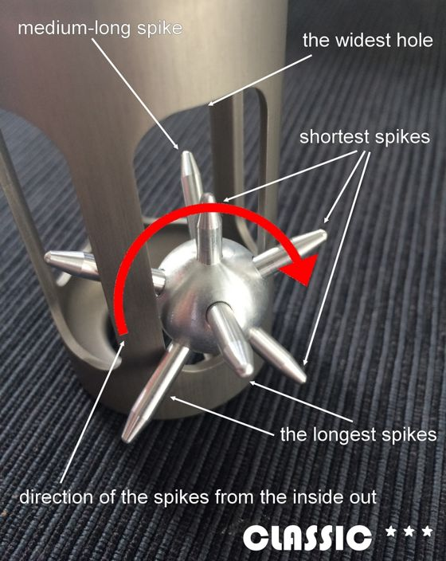
easy 的原型。红色箭头是解法中刺球的转动方向：尖刺一根一根从窗口里转出来。

圆筒笼外径 135 mm、高 240 mm，5 个窗口宽 55.5–60 mm；球心直径 54 mm，10 根尖刺外露 30–60 mm。

4 个窗口：48 mm 窄槽，中部 105 mm 宽带位于球初始高度之上；需要抬升并转向。

GEN 钥匙孔原型：斜向窗口加顶部孔，6 刺球。
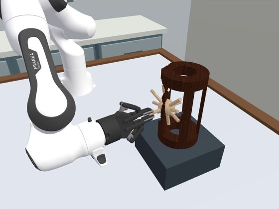
3.4 s从侧面接近
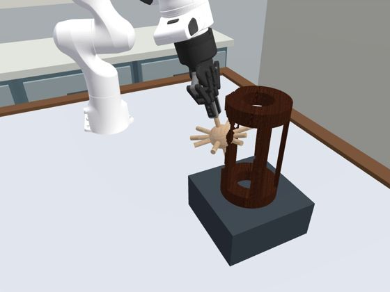
17.2 s从上方伸入，抓住刺球
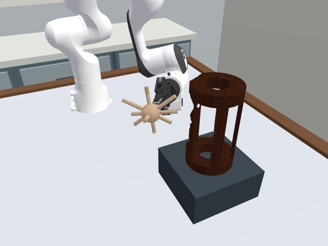
51.6 s调整姿态，从开口取出
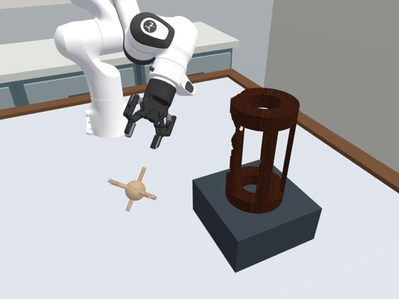
79.1 s放到桌面目标区，松开
demos/hedgehog_in_cage/varaition_oblique_gate/front_oblique/，2026-09-21 由实测物理状态重渲染）。用来说明任务流程，不代表当前三档。上方三张当前几何图由仓库生成器输出的网格在 CPU 上渲染，不含机器人。新增两档 计划原文
very_easy hedgehog_in_cage_very_easy
把笼子做得更敞开，或让柱子更稀疏。机械臂找好接近角度，伸入夹爪，抓住刺球直接拿出来，再搬到目标区。
easier hedgehog_in_cage_easier
增加一点出口约束。例如直接往外拉时两根长刺会被柱子挡住，机械臂抓住后把刺球转一下，调整方向再取出。
仓库现状 dev/jianwen 上（2026-09-30）hedgehog 三档中 easy 和 medium 已完成正式可解性证明：纯物体路径、IK、从默认 home 的完整机器人执行、原生成功判定和独立审计，范围是 seed 0、默认参数、辅助抓持 contact_weld_v1；hard 尚未完成（默认初态的球核与笼壁碰撞网格相交）。这些记录只描述对应实例，新变体不能继承。
马蹄环
两只马蹄的尖端各有一个眼孔，上下两条链段把左右眼孔连起来；目标环套住这两条链段。任务是把环取下放到目标区，其余部件留在分隔线另一侧，允许保持抓持。判定同时要求每对相邻链环、眼孔仍然扣在一起（环绕数为 ±1）。

马蹄中心线 128 × 130 mm，轻微内收腰线；环中心线 140 × 134 mm。

外廓更方的 U 形（outline power 2.5），128 × 122 mm；环 140 × 133 mm。

椭圆马蹄 128 × 143 mm；椭圆环 152 × 132 mm。
三档共用 16 mm 带宽、24° 开口半角、每段 1 个链环、环丝直径 5.6 mm（scale = 2）。渲染为 5 s 被动落稳后的桌面姿态（*_settled_poses.json）。源码注释写明三档“按形状和朝向暂定，机器人求解未验证”。
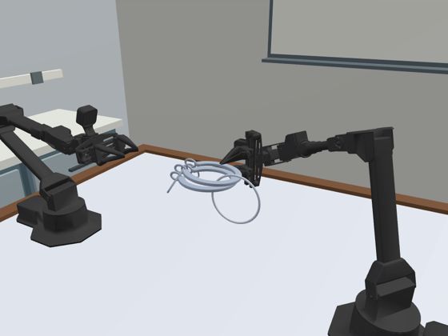
48.0 s右臂持住折合后叠在一起的两只马蹄，环挂在下方
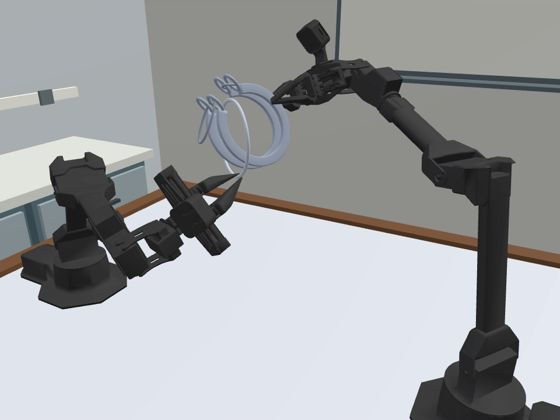
79.5 s竖起叠合的马蹄，左臂抓住环
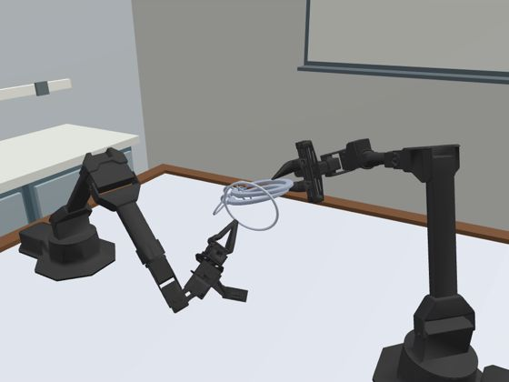
93.0 s左臂带着环从叠合的马蹄上退出
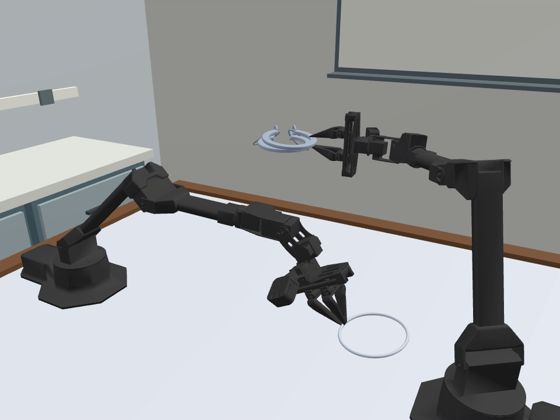
109.0 s环释放到桌面
demos/horseshoe_ring/varaition_baseline/detail/，2026-09-18，使用预抓持和接触确认后的辅助抓持）。0–48 s 为双臂抓起、翻转并折合两只马蹄。几何属于早期 baseline，不代表当前三档。环是怎么被困住的 我的解读
HorseshoeAssembly.topology_report 的初始检查）。环绕数为 0 说明环在拓扑上没有被锁住，原则上可以取下。困住它的是几何尺寸。直接沿链段方向拉环时，一只马蹄的两条臂同时穿过环孔，环孔必须宽于马蹄：easy 的马蹄平放时宽约 144 mm（中心线 128 mm 加 16 mm 带宽），环孔只有约 135 × 128 mm，所以直拉被挡住。仓库现状 四种基础形状的初始 ±X 直拉对照都被阻挡（coupled_shape_variants_v1/controls.json）。
环不需要一次套过整只马蹄。刚性环可以沿弯曲的部件一段一段移动，只要每个时刻穿过环孔的那几段截面都放得进环孔。所以“环孔比马蹄小”不等于取不出来，关键是让同时穿过环孔的部件靠在一起。
仓库现状 已知做法：双臂先翻转、折合两只马蹄，让两端和链环形成可过环的局部构型，再交接、抓环，使环依次越过限制部件，最后搬离；不是在初态直接拉环（docs/develop/tasks/task_variant_solutions_action_ik_zh.md §3，见上方过程帧）。当前三档各有一条完整零件几何路径，最小保守间隙约 0.148 / 0.127 / 0.117 mm，都还没有机器人执行；hard 的这条路径需要环在自身平面内多转约 58.66°。
我的解读，未逐步验证 两只马蹄叠在一起后，回路 C 在叠合处折返，环孔里同时穿过的是两段相邻、方向相反的部件，不再是相距一个马蹄宽度的两条臂，因此环孔比马蹄小也能通过。逐步核实需要对照几何证书里的位姿序列（runs/environment-solvability/horseshoe_ring/coupled_shape_variants_v1/，本机没有这份数据）。
新增两档 我的建议，计划未指定
very_easy horseshoe_ring_very_easy
放大环孔或缩小马蹄，使环孔宽于马蹄（含带宽）。抓住环后沿链段方向直接拉过一侧马蹄，再搬到目标区。一只手臂扶住马蹄组件、另一只取环即可。
easier horseshoe_ring_easier
用椭圆环：长轴宽于马蹄、短轴窄于马蹄。初始让长轴沿马蹄板厚方向（竖直），直拉被挡；抓住环后让环在自身平面内转约 90°，长轴转到与马蹄宽度同向，再直拉取出。这与刺球 easier 的“绕出口方向转一下”是同一类操作；现有 hard 的已知路径也依赖环的平面内转角。
长孔立柱解环
底座上固定一根带长孔的立柱，金属环套在立柱根部。一根绳从长孔穿过一次，再从右侧柱外绕回，两端各连一个端盘，绳上有两颗可滑动的木珠。目标是把整个环取下放到目标区，绳与端盘的连接保持。来源是 Puzzle guy 的视频，属于 Fisherman's Folly 一类绳结谜题。绳是体积有限元（E = 50 kPa），珠、端盘、环是自由刚体，当前未启用辅助抓持。

环内径 108 mm、外径 148 mm。

环内径 105 mm、外径 145 mm。

环内径 102 mm、外径 142 mm（兼容 base）。
三档只改环的大小：28 mm 槽、20 mm 环管、110 mm 端盘、7 mm 绳、39 mm 珠都相同。这是小幅净空分级，不是已标定的操作难度（docs/develop/tasks/slotted_post_ring_zh.md）。
尺寸关系决定谁能穿过谁 仓库现状
| 关系 | 尺寸（mm） | 作用 |
|---|---|---|
| 珠直径 > 槽宽 | 39 > 28 | 珠挡住槽，绳上的珠过不了柱孔 |
| 珠直径 < 环内径 | 39 < 102–108 | 珠能穿过环（“过珠”这一步） |
| 端盘直径 > 环内径 | 110 > 102–108 | 端盘挡住环，环不能沿绳直接滑出；余量 hard 8 / medium 5 / easy 2 |
| 端盘厚 + 绳径 < 槽宽；端盘直径 < 槽长 − 槽宽 | 18 < 28；110 < 176 | 端盘侧立可穿过柱槽 |
| 环管直径 < 槽宽；环外径 < 槽长 | 20 < 28；142–148 < 204 | 环本身侧立可穿过柱槽 |
| 环内半径 − 柱截面半对角线 | 51–54 − 38.6 | 环套在柱上的径向净空 12.4 / 13.9 / 15.4 |
这些不等式来自 SlottedPostLayout.validate()。已知的解法顺序（Cabalar 与 Santos 的 Fisherman's Folly 形式化解法，Figure 4）：① 端盘一侧穿过柱槽，② 环越过柱顶，③ 过珠，④ 环本身侧立穿过柱槽，⑤ 再次过珠。历史实现中，topology.py 沿绳记录有向穿孔序列并消去相邻的互逆穿越（与自由群中字的约化相同），用来辅助判断拓扑状态，不代替接触、绳长和最终完全分离检查。
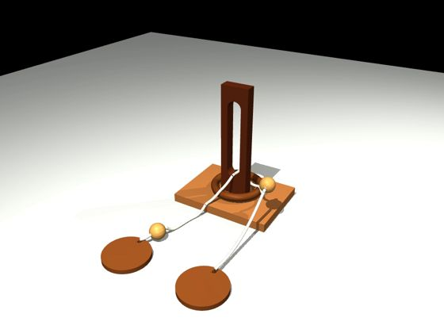
6.1 s重力落稳后的初态
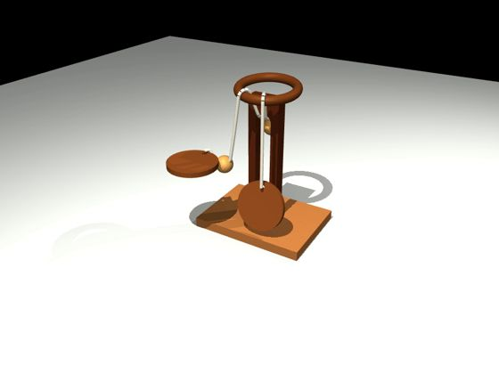
55.1 s端盘已穿槽，环越过柱顶
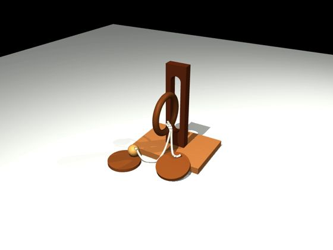
79.6 s环侧立穿过柱槽
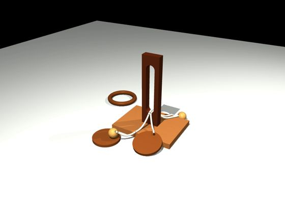
128.6 s再次过珠后，环放在桌面
demos/slotted_post_ring/varaition_clearance36/front_oblique/，2026-09-21）。这是有力与力矩上限的外力驱动仿真，没有机器人，绳为早期一维长度约束模型，不计作机器人完成。main 上的现状（2026-09-29）：三档几何与相关回归通过；10 s 长时稳定性因 CUDA 显存不足和原生 IPC cudaErrorInvalidDevice 未通过；完整机器人解环尚未通过。main 上 goal_complete = False，dev/jianwen 已去掉这个标记。
新增两档 我的建议，计划未指定
very_easy slotted_post_ring_very_easy
让绳不穿过环（或把端盘做得小于环内径），环只是套在立柱上：抓住环，沿立柱提起越过柱顶，搬到目标区。需要确认 ALOHA 能把环提到柱顶以上（柱高 290 mm，底座 22 mm）。
easier slotted_post_ring_easier
在 very_easy 基础上加一个必须转环的约束。例如柱顶加一根长于环内径的横杆：环要先竖起来，让横杆从环孔中穿过，再越过柱顶。这与刺球的“转一次再拉出”是同一类能力。
我的建议 新档是否保留 FEM 绳由你决定。不带绳的版本可以回到刚体，不受当前 IPC 显存问题影响，但物理类型与原任务不同，需要和任务负责人确认。
已知解法与验证状态 仓库现状
分两层看：不带机器人、直接移动物体的“物体层面路径”，和机器人从 home 出发的完整执行。三个任务都有物体层面的已知解法；机器人完整执行目前只有 hedgehog 的 easy、medium 完成。
| 任务 | 物体层面路径 | 机器人完整执行 | 依据 |
|---|---|---|---|
| 刺球出笼 | easy、medium 有经独立复核的纯物体路径；hard 可借鉴同家族旧路线（从顶部钥匙孔逐组取出） | easy、medium 已完成（2026-09-30，seed 0，辅助抓持；easy 两次抓取）；hard 未完成 | dev/jianwen docs/develop/tasks/hedgehog_in_cage_zh.md |
| 马蹄环 | 当前三档各有一条完整零件几何路径（最小保守间隙 0.148 / 0.127 / 0.117 mm） | 当前三档无；早期 baseline 圆环几何在 2026-09-18 有完整执行（辅助抓持） | task_variant_solutions_action_ik_zh.md §3；horseshoe_existing_candidates_tier_review_20260925_zh.md（legacy） |
| 长孔立柱解环 | 已知拓扑解法（Fisherman's Folly，Figure 4）；36 mm 槽候选有 147 s 外力驱动完整流程（旧一维绳模型） | 无；旧模型只有“过珠”局部执行；当前 FEM 版 10 s 静置也因显存问题未通过 | docs/develop/tasks/slotted_post_ring_zh.md |
物体层面的路径只说明几何上可行，不包含抓持、IK 和动力学。新变体都需要重新验证，不能继承上表任何一项。
代码和素材放在哪里 计划原文
topogym/tasks/ 是任务源码，仓库根目录的 tasks/ 是生成后的 Harbor 任务包。新变体先在源码和素材层实现，再通过公共工具生成任务包。
topogym/tasks/<task_id>/<task_id>_very_easy.py<task_id>_easier.py按需改 common.py 或加任务内辅助模块topogym/assets/geometry/topogym/assets/resources/variations/<task_id>/catalog.json 登记与哈希topogym/config/variation_records.pyconfigs/、goal_description.py 按需更新topogym.make(task, variation_id=…)topogym/planning/<task_id>/scripts/oracle_runners/、ci_checks/证据：runs/test_results/scripts/topogym_mk_task.py → <slug>-privilegedscripts/topogym_mk_limited.py → <slug>-standardtasks/dataset.toml仓库现状 新类沿用现有写法：继承同任务的 …Task，用 merge_parameters 覆盖参数，声明独立的 variation_id、family_id、model_revision（参考 hedgehog_in_cage_medium.py）。登记时的一处限制：
# topogym/config/variation_records.py，参照 slotted_post_ring_clearance36 的写法 {'task_id': 'hedgehog_in_cage', 'variation_id': 'hedgehog_in_cage_very_easy', 'difficulty': None, # 取值待确认，见“待确认”第 1 条 'family_id': '…', 'model_revision': '…', 'implementation': 'topogym.tasks.hedgehog_in_cage.hedgehog_in_cage_very_easy:HedgehogInCageVeryEasyTask', 'aliases': [], # 不占用 easy / base 'status': 'integrated', 'reason': None, 'validation': 'not_runtime_validated', 'pool': 'experimental'}, # 不能用 'tier'
仓库现状 seeded_variation() 要求 pool == 'tier' 里恰好有 easy、medium、hard 各一条（topogym/config/registry.py），新入口登记成 tier 会让 variation_id="seeded" 报错。当前 seeded 与批量评测按三档采样；要自动跑五档，需协调修改 registry.py、scripts/sample_difficulty_instances.py、scripts/difficulty_eval.py 及结果处理，并保留旧 seed 的含义。
工程边界 计划原文
- 正式运行所需素材放包内
topogym/assets/resources/，不能只放根目录assets/tasks/或依赖历史runs/；活动代码不导入legacy/。 - 新变体有独立参数、资源和版本身份，不覆盖旧 easy 的素材，不借用旧实例的成功记录。新增文件不受历史上“每任务只保留三个难度入口”的限制。
- 修改同任务共用代码（
common.py等）时保留旧变体的行为。简化场景若需要不同的几何校验或目标适配，限定在新变体内，并让公开说明（goal_description.py）与实际判据一致。 - 共享 simulator、World、
topogym/tasks/base.py、公共判据、Harbor 模板和打包工具可能正被 pipeline 成员修改（run trials 合并后修复计划，工作包 W0–W11）。需要动这些文件时先协调，避免互相覆盖。 - 打包时检查
pyproject.toml、.dockerignore和镜像实际内容；包内 variations 目录已有打包规则，通常不需要另建资源通路。 - 新变体完成后，用包含新代码和素材的运行版本重新生成任务包并验证；旧包和旧镜像不会自动获得新变体。
交付与进度 计划原文
- 六个可选择的变体，每个场景附一段简短说明。
- 能看出接近、抓取、必要调整和搬运过程的运行证据。视频按
demos/<task>/varaition_<id>/<camera>/规则存放，配套证据放runs/demo_metadata/。 - 重点确认：场景可达、能完成任务、两档确实体现能力区别。
- 区分“已建好场景”和“已完成真实机器人验证”。不需要提前锁死所有尺寸和操作步骤。
| 入口 | 场景已建好 | 可达、可完成 | 两档区别已验证 | 运行证据 | 真实机器人验证 |
|---|---|---|---|---|---|
hedgehog_in_cage_very_easy | 未开始 | 未开始 | 未开始 | 未开始 | 未开始 |
hedgehog_in_cage_easier | 未开始 | 未开始 | 未开始 | 未开始 | 未开始 |
horseshoe_ring_very_easy | 未开始 | 未开始 | 未开始 | 未开始 | 未开始 |
horseshoe_ring_easier | 未开始 | 未开始 | 未开始 | 未开始 | 未开始 |
slotted_post_ring_very_easy | 未开始 | 未开始 | 未开始 | 未开始 | 未开始 |
slotted_post_ring_easier | 未开始 | 未开始 | 未开始 | 未开始 | 未开始 |
我的整理 进度表按计划的交付要求列出。状态取值：未开始 进行中 已完成 未通过。本表随实现进度更新。
待确认 我的整理
difficulty字段取值。先例slotted_post_ring_clearance36用None。若写'very_easy'/'easier'，需先检查TIER_ORDER及其他读取difficulty的代码。- Slotted Post Ring 的新档是否保留 FEM 绳。见该任务部分末尾。
- 辅助抓持。dev/jianwen 为 hedgehog 和 horseshoe 加了
recommended_grasp_assist（contact_weld_v1）；新变体是否沿用，需与 pipeline 的评测设置一致。 - 代码基线。本页引用的代码与几何来自 topogym main
e3a8ec7。计划原文和最新 pipeline（privileged / standard、tooling v5）在 robot_coding_bench dev/jianwen，比 main 多 24 个提交；三个任务在该分支上的差异见上文各处注记。实现前应把工作分支对齐到 dev/jianwen。